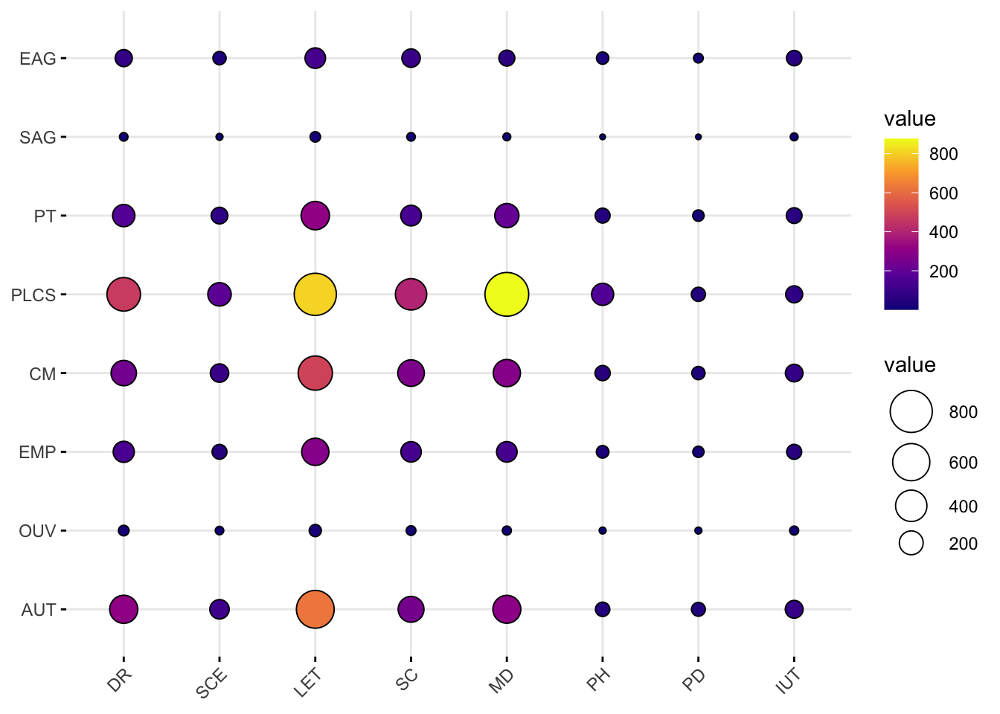

library(ggplot2)
library(FactoMineR)
library(factoextra)
library(reticulate)
library(ggpubr)TP2 - Correspondence Analysis
1 Données de sociologie
1.1 Description
Nous nous intéressons dans ce TP à des données issues du travail du sociologue Pierre Bourdieu.
Socio<-read.table("DataSocio.txt",header=T)| DR | SCE | LET | SC | MD | PH | PD | IUT | |
|---|---|---|---|---|---|---|---|---|
| EAG | 80 | 36 | 134 | 99 | 65 | 28 | 11 | 58 |
| SAG | 6 | 2 | 15 | 6 | 4 | 1 | 1 | 4 |
| PT | 168 | 74 | 312 | 137 | 208 | 53 | 21 | 62 |
| PLCS | 470 | 191 | 806 | 400 | 876 | 164 | 45 | 79 |
| CM | 236 | 99 | 493 | 264 | 281 | 56 | 36 | 87 |
| EMP | 145 | 52 | 281 | 133 | 135 | 30 | 20 | 54 |
| OUV | 16 | 6 | 27 | 11 | 8 | 2 | 2 | 8 |
| AUT | 305 | 115 | 624 | 247 | 301 | 47 | 42 | 90 |
La table de contingence Socio contient les effectifs des étudiants de l’enquête.
En ligne, nous avons les différentes catégories socioprofessionnelles pour le chef de famille :
- EAG : exploitant agricole
- SAG : salarié agricole
- PT : patron
- PLCS : profession libérale et cadre supérieur
- CM : cadre moyen
- EMP : employé
- OUV : ouvrier
- AUT : autre
En colonne, nous retrouvons les types d’études poursuivies
- DR : droit
- SCE : sciences économiques
- LET : lettres
- SC : sciences
- MD : médecine ou dentaire
- PH : pharmacie
- PD : pluridisciplinaire
- IUT : IUT
Nous pouvons visualiser cette table de contingence à l’aide de la fonction ggballoonplot() de la librairie ggpubr.
ggballoonplot(Socio, fill = "value")+
scale_fill_viridis_c(option = "C")
Question : A l’aide de la fonction chisq.test(), testez s’il y a indépendance ou pas entre les deux variables qualitatives.
# A COMPLETER1.2 Analyse des correspondances à la main
Afin d’assimiler le cours, nous allons tout d’abord faire l’analyse des correspondances “à la main”.
Question : La première étape consiste à définir les matrices \(F_X\) et \(F_Y\) contenant les profils lignes et colonnes respectivement, associés à ces données. Construisez ces deux matrices à l’aide des fonctions diag(), rowSums(), colSums().
# A COMPLETER
FX<- ...
rownames(FX) <- rownames(Socio)
FY<- ...
rownames(FY) <- colnames(Socio)Question : Faites une ACP sur les profils lignes
- matrice des données \(F_X\)
- matrice des poids \(W=W_X = \mbox{diag}(n_{1+}/n,\ldots,n_{I+}/n)\)
- métrique associée à la matrice \(M = W_Y^{-1}=\mbox{diag}(n/n_{+1},\ldots,n/n_{+J})\)
Pour cela, déterminez les valeurs propres et vecteurs propres à l’aide de la fonction eigen() d’une matrice bien choisie.
# A COMPLETER
ACPX<-eigen(....)Question : Vérifiez que l’ACP des profils-lignes peut se retrouver par la décomposition spectrale de \((F_YF_X)'\). Que remarque-t-on concernant les valeurs propres.
# A COMPLETERQuestion : Déterminez les composantes principales \(C^{(row)}_s\).
Crow<-...Question : Faites une ACP des profils-colonnes avec la matrice des poids \(W=W_Y\) et la métrique associée à la matrice \(M = W_X^{-1}\). Déterminez les composantes principales \(C^{(col)}_s\).
# A COMPLETER
ACPY<-eigen(...)
Ccol<-....Question : Quelle relation permet de relier \(C^{(row)}_s\) et \(C^{(col)}_s\) ? Vérifiez numériquement.
# A COMPLETER1.3 Analyse des correspondances avec FactoMineR
Question : A l’aide de la fonction CA() de la librairie FactoMineR, faites une analyse des correspondances du jeu de données Socio. Retrouvez les pvaleurs, les composantes principales, …. par rapport aux calculs précédents.
resCA<-CA(.....) # A COMPLETERQuestion : Tracez les modalités sur le premier plan factoriel et interprétez.
fviz_ca(....) # A COMPLETERQuestion : Etudiez la qualité de représentation de chaque catégorie socioprofessionnelle et de chaque type d’étude suivie. Commentez. Vous pouvez utiliser les fonctions fviz_cos2(), fviz_ca_row()et fviz_ca_col() pour la visualisation.
# A COMPLETERQuestion : Etudiez les contributions de chaque catégorie socioprofessionnelle et de chaque type d’étude suivie pour le premier axe. Vous pouvez utiliser les fonctions fviz_contrib(), fviz_ca_row()et fviz_ca_col() pour la visualisation.
# A COMPLETER1.4 Analyse des correspondances avec Python
Dans cette partie, nous allons faire une analyse des correspondances à l’aide de la librairie prince en Python. Retrouvez les éléments vus précédemment à l’aide des commandes suivantes.
import prince
Sociopy=r.Socio
ca = prince.CA(
n_components=5,
n_iter=3,
copy=True,
check_input=True,
engine='sklearn',
random_state=42
)
ca = ca.fit(Sociopy)ca.eigenvalues_summaryca.row_coordinates(Sociopy).head()
ca.column_coordinates(Sociopy).head()ca.plot(
Sociopy,
x_component=0,
y_component=1,
show_row_markers=True,
show_column_markers=True,
show_row_labels=True,
show_column_labels=True
)ca.row_contributions_.head().style.format(precision=2)
ca.column_contributions_.head().style.format(precision=2)2 Données des tâches domestiques
Dans cette partie, nous étudions des données répertoriant la répartition des tâches domestiques au sein d’un couple. Cet ensemble de données est disponible dans la librairie R factoextra.
data("housetasks")
knitr::kable(housetasks,align='c')| Wife | Alternating | Husband | Jointly | |
|---|---|---|---|---|
| Laundry | 156 | 14 | 2 | 4 |
| Main_meal | 124 | 20 | 5 | 4 |
| Dinner | 77 | 11 | 7 | 13 |
| Breakfeast | 82 | 36 | 15 | 7 |
| Tidying | 53 | 11 | 1 | 57 |
| Dishes | 32 | 24 | 4 | 53 |
| Shopping | 33 | 23 | 9 | 55 |
| Official | 12 | 46 | 23 | 15 |
| Driving | 10 | 51 | 75 | 3 |
| Finances | 13 | 13 | 21 | 66 |
| Insurance | 8 | 1 | 53 | 77 |
| Repairs | 0 | 3 | 160 | 2 |
| Holidays | 0 | 1 | 6 | 153 |
Les données sont un tableau de contingence contenant \(13\) tâches domestiques et leur répartition dans le couple. Les lignes sont les différentes tâches, les valeurs sont les fréquences des tâches effectuées :
- par la femme uniquement,
- alternativement,
- par le mari uniquement,
- ou conjointement.
Les données de cet exemple traitent de l’intégration des femmes mariées sur le marché du travail en 1977. On a demandé à des couples bi-salariés, nouvellement mariés et sans enfant de cinq villes allemandes qui était responsable de chacune des tâches suivantes:
- s’occuper du linge,
- préparer les repas principaux,
- préparer le dîner,
- préparer le petit déjeuner,
- ranger la maison,
- faire la vaisselle,
- faire les courses,
- s’occuper des démarches officielles (déclarations d’impôts, etc.),
- conduire une voiture,
- s’occuper des finances,
- s’occuper des assurances,
- faire les petites réparations ménagères,
- planifier les voyages et les vacances.
Question : Après avoir visualisé cette table de contingence et testé l’indépendance des deux variables qualitatives, faites une analyse des correspondances. Interprétez.
# A COMPLETER